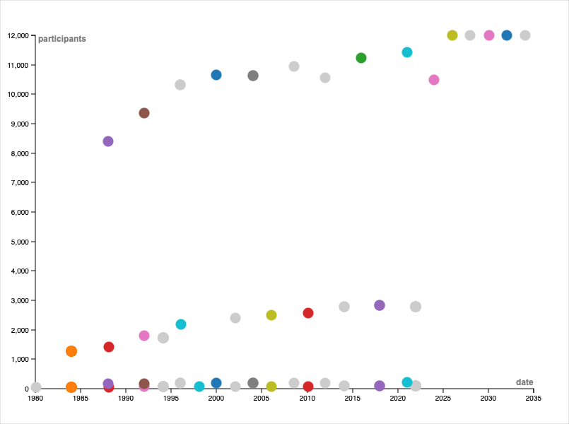

Visualisation de données : Les Jeux Olympiques
1. Carte interactive (via Wikidata)
Cette carte affiche les villes hôtes. Elle utilise des données spatiales (coordonnées) et visuelles (images).
2. Analyse temporelle et quantitative (via RAWGraphs)
Ce graphique compare l'année de l'événement avec le nombre de participants (données temporelles et quantitatives).

Types de données présentes :
- Temporelles : Années des éditions des JO.
- Quantitatives : Nombre de participants par édition.
- Spatiales : Localisation géographique des villes (P625).
- Catégorielles : Pays organisateurs (P17).
- Visuelles : Photos des villes (P18).